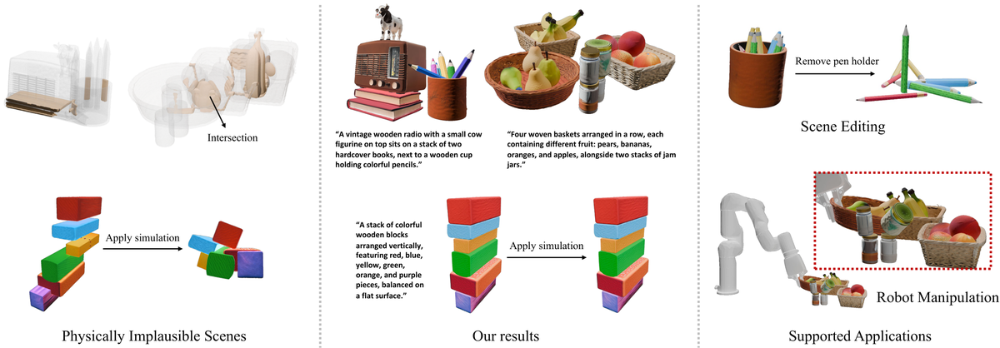
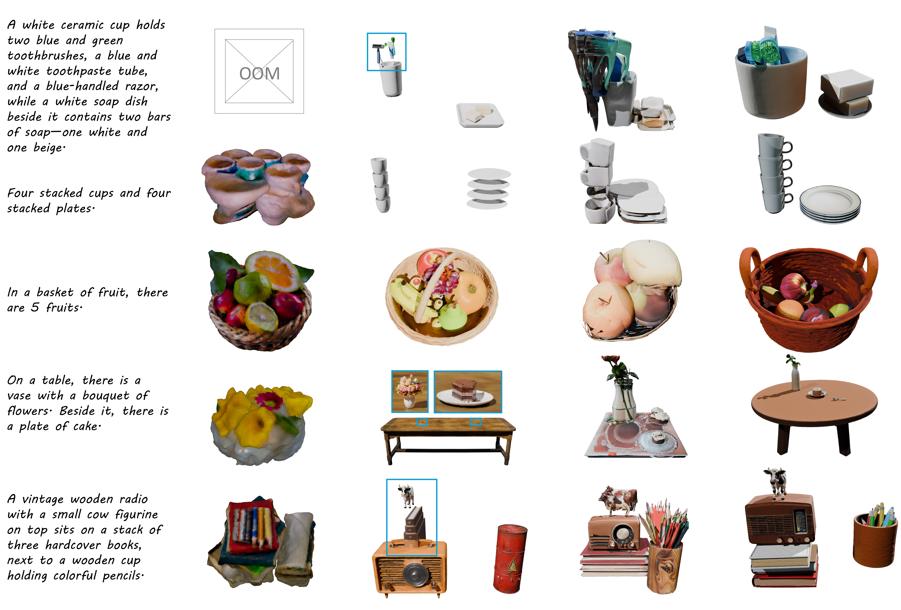
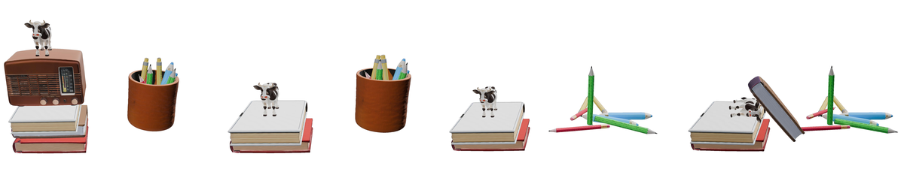

PAT3D
简单摘要
我们介绍 PAT3D，这是第一个物理增强的文本到 3D 场景生成框架，它将视觉语言模型与基于物理的模拟相结合，以生成物理上合理、可模拟且无交叉的 3D 场景。给定文本提示，PAT3D 生成 3D 对象，推断它们的空间关系，并将它们组织成分层场景树，然后将其转换为模拟的初始条件。可微分刚体模拟器可确保重力下真实的物体交互，推动场景达到静态平衡，而不会相互渗透。为了进一步提高场景质量，我们引入了循环仿真优化程序，保证物理稳定性和不相交，同时提高与输入提示的语义一致性。
实验表明，PAT3D 在物理合理性、语义一致性和视觉质量方面远远优于先前的方法。除了高质量生成之外，PAT3D 还独特地为场景编辑和机器人操作等下游任务提供了模拟就绪的 3D 场景。代码和数据将在接受后发布。


简而言之，这篇论文关注的核心是：我们介绍 PAT3D，这是第一个物理增强的文本到 3D 场景生成框架，它将视觉语言模型与基于物理的模拟相结合，以生成物理上合理、可模拟且无交叉的 3D 场景。给定文本提示，PAT3D 生成 3D 对象，推断它们的空间关系，并将它们组织成分层场景树，然后将其转换为模拟的初始条件。可微分刚体模拟器可确…
从自然语言生成逼真且可编辑的 3D 场景的能力在虚拟现实、机器人、数字孪生和内容创建等各个领域具有广泛的应用。扩散和自回归生成模型的最新进展极大地拓展了文本到 3D 场景生成的界限，使得合成高质量的对象几何形状和引人注目的视觉内容成为可能。然而，尽管取得了这些进步，现有的方法仍难以确保生成的场景表现出物理合理性——这是需要交互、模拟或构建现实世界对应的下游应用程序的关键要求。特别是，当前的 3D 场景生成管道通常将布局合成视为纯粹的几何问题，完全忽略物理推理或使用简单的启发式方法来防止不利的物理交互，例如对象相交。
由于缺乏物理的明确约束，这会导致常见问题，例如浮动、堆叠不稳定和不正确的支撑关系，最终限制了场景的真实感和可用性。早期的努力已经结合了物理约束来增强单对象稳定性，或者使用视频扩散先验来实现合理的动力学，但这些方法都没有解决稳定且语义连贯的多对象场景所需的复杂空间依赖性和接触交互。一个有前途的方向是将基于物理的模拟集成到场景生成过程中以增强物理真实感。然而，这种方法带来了一些挑战。首先，对象必须表示为单独分段的 3D 网格，以便能够模拟重力和接触力下的相互作用。
将模拟应用于由单个连接网格表示的场景是无效的，因为它无法捕获对象之间的交互。其次，基于物理的模拟需要一个适定的初始配置，通常没有交叉点，以避免数值不稳定和不切实际的行为。然而，识别这种无交集的起始状态并非易事。最后，即使模拟场景在物理上是合理的，由于有效静态平衡的多重性，它也可能偏离输入文本中描述的预期语义。为了应对这些挑战，我们提出了 PAT3D，这是一种物理增强的文本到 3D 场景生成框架，它将可微分刚体接触模拟集成到生成管道中。
给定文本提示，我们首先合成参考图像以...
核心创新
综合引言与方法部分，这篇论文的核心创新可以概括为以下几方面：
1）问题定义与研究动机
从自然语言生成逼真且可编辑的 3D 场景的能力在虚拟现实、机器人、数字孪生和内容创建等各个领域具有广泛的应用。扩散和自回归生成模型的最新进展极大地拓展了文本到 3D 场景生成的界限，使得合成高质量的对象几何形状和引人注目的视觉内容成为可能。然而，尽管取得了这些进步，现有的方法仍难以确保生成的场景表现出物理合理性——这是需要交互、模拟或构建现实世界对应的下游应用程序的关键要求。特别是，当前的 3D 场景生成管道通常将布局合成视为纯粹的几何问题，完全忽略物理推理或使用简单的启发式方法来防止不利的物理交互，例如对象相交。由于缺乏物理的明确约束，这会导致常见问题，例如浮动、堆叠不稳定和不正确的支撑关系，最终限制了场景的真实感和可用性。早期的努力已经结合了物理约束来增强单对象稳定性，或者使用视频扩散先验来实现合理的动力学，但这些方法都没有解决稳定且语义连贯的多对象场景所需的复杂空间依赖性和接触交互。一个有前途的方向是将基于物理的模拟集成到场景生成过程中以增强物理真实感。然而，这种方法带来了一些挑战。首先，对象必须表示为单独分段的 3D 网格，以便能够模拟重力和接触力下的相互作用。将模拟应用于由…
2）方法框架与核心模块
我们的框架包括三个阶段：3D 对象和空间关系提取（sec:data_preparation），其中 3D 资产是从文本生成的，其空间关系被组织成场景树；布局初始化（sec:intersec_free_initial_layout），首先使用从参考图像获得的单目深度先验来排列生成的资产，并使用场景树将它们细化为无交集配置；布局优化（sec:layout_opt），其中应用循环仿真优化程序来确保物理合理性并提高 3D 场景的语义一致性。 3D 对象和空间关系提取由于使用文本到 3D 模型和 LLM 直接生成 3D 对象和布局通常无法捕获复杂的空间关系，因此我们采用文本到图像模型来生成参考图像，以指导对象生成和场景树构建。参见图：管道(a)。 3D 对象生成 为了为文本提示指定的场景生成单独的对象，使用参考图像查询 VLM 以获得对象类标签，并相应地使用 Grounded-SAM 对图像进行分割。基于分割的对象区域，我们进一步提示 VLM 生成包含对象语义、材质、颜色和方向的详细文本描述。这些描述被输入到文本到 3D 管道中，以合成语义一致且视觉逼真的高质量、有纹理的 3D 资源。空间关系…
3）实验设计与工程价值
比较基线 我们将我们的方法与三个基线进行比较：GraphDreamer、MIDI 和 Blender-MCP。 GraphDreamer 和 Blender-MCP 都采用文本提示作为输入，而 MIDI 使用参考图像作为输入。为了确保公平比较，我们向 MIDI 提供我们的场景参考图像作为其输入。数据集 由于一般场景生成没有标准基准，因此我们构建了自己的测试数据集，其中包含 18 个文本提示。其中，3个提示取自MIDI，2个提示取自GraphDreamer。此外，我们使用法学硕士生成 13 个跨越不同场景的新文本提示。这些提示描述了对象之间的物理交互，包括一堆书和一篮子水果。我们的方法生成的其他 3D 结果，与基线进行比较，以及相应的文本提示和参考图像，可以在可视化网站（https://3dsim-baseline-visualization.netlify.app/）上找到。除了这些比较…
技术细节
下面按照论文的方法章节结构展开，重点说明模型的关键模块、公式设计和训练策略。
我们的框架包括三个阶段：3D 对象和空间关系提取（sec:data_preparation），其中 3D 资产是从文本生成的，其空间关系被组织成场景树；布局初始化（sec:intersec_free_initial_layout），首先使用从参考图像获得的单目深度先验来排列生成的资产，并使用场景树将它们细化为无交集配置；布局优化（sec:layout_opt），其中应用循环仿真优化程序来确保物理合理性并提高 3D 场景的语义一致性。 3D 对象和空间关系提取由于使用文本到 3D 模型和 LLM 直接生成 3D 对象和布局通常无法捕获复杂的空间关系，因此我们采用文本到图像模型来生成参考图像，以指导对象生成和场景树构建。参见图：管道(a)。 3D 对象生成 为了为文本提示指定的场景生成单独的对象，使用参考图像查询 VLM 以获得对象类标签，并相应地使用 Grounded-SAM 对图像进行分割。基于分割的对象区域，我们进一步提示 VLM 生成包含对象语义、材质、颜色和方向的详细文本描述。这些描述被输入到文本到 3D 管道中，以合成语义一致且视觉逼真的高质量、有纹理的 3D 资源。空间关系提取然后我们从参考图像中提取场景中对象之间的相对空间关系并分析它们的物理依赖性。此信息为无交集布局初始化 (sec:intersec_free_initial_layout) 和后续优化 (sec:layout_opt) 提供基本指导。具体来说，对于参考图像中具有相似水平位置和相邻垂直位置的每对分割对象，我们提示 VLM 推断它们沿重力轴的依赖性，识别诸如打开、包含和支撑等关系。然后，所得的成对关系被组织成一个分层场景树，该树对物体如何在重力作用下相互支撑进行编码。从地面作为根节点开始，我们遍历场景并迭代地将对象添加为树中的节点。对于与现有节点有直接物理依赖性的每个未访问对象，我们将其作为该节点的子节点插入。这个递归过程一直持续到所有对象都被包含在内。
算法 中提供了其他详细信息，图：pipeline(a) 中显示了一个示例。布局初始化为了获得无交叉且语义一致的初始布局以用于后续的循环仿真优化，我们首先计算平移和缩放变换以构建与参考图像一致的初步布局，然后使用提取的场景树对其进行细化以确保没有对象交叉和更强的物理约束。参见图：管道(b)。初步布局我们将 sec:3d_ Generation 中生成的对象排列到布局中的简单方法......
$$ \min_{q_0} L(q_{n+1}(q_0)) \quad \text{s.t.} \quad f(q_{n+1}) = 0, \label{eq:loss} $$
公式：\min_{q_0} L(q_{n+1}(q_0)) \quad \text{s.t.} \quad f(q_{n+1}) = 0, \label{eq:损失} 上下文：复杂的对象间交互，仅进行模拟可能会导致场景偏离其预期语义。为了解决这个问题，我们引入了循环仿真优化来提高模拟场景中的语义一致性。参见图：管道(c)。具体来说，我们改进了无交集初始化……
$$ l_i = d(\mathbf{p}^i_{\min}, \text{BBox}_t)^2 + d(\mathbf{p}^i_{\max}, \text{BBox}_t)^2, \label{eq:local_loss} $$
公式：l_i = d(\mathbf{p}^i_{\min}, \text{BBox}_t)^2 + d(\mathbf{p}^i_{\max}, \text{BBox}_t)^2, \label{eq:local_loss} 上下文：s.t. f(q_n+1) = 0，方程，其中测量语义不一致并表示所有对象上的净力。对于每个具有容器 的对象，我们将其在水平面上的投影边界框定义为 。局部损失惩罚 from 的角点的偏差：其中 if ，否则，是欧几里德距离 fr…
$$ L(q_{n+1}(q_0)) = \sum_{i=1}^{N} l_i, \label{eq:total_loss} $$
公式：L(q_{n+1}(q_0)) = \sum_{i=1}^{N} l_i, \label{eq:total_loss} 上下：局部损失惩罚 from 的角点的偏差：其中 if ，否则，是 到盒子边界的欧几里德距离。总损失定义为场景中物体的总数。相对于 的直接梯度不能通过微分静态平衡约束来获得……


把全文方法串起来看，这篇论文的逻辑基本都遵循同一条主线：先把输入组织成更容易处理的表示，再通过模型结构和损失函数把这个表示推向目标输出，最后用可视化与数值实验共同证明该设计有效。
实验结论
实验部分主要回答两个问题：第一，方法是否真的优于已有基线；第二，这种优势来自哪一个设计决策。
比较基线 我们将我们的方法与三个基线进行比较：GraphDreamer、MIDI 和 Blender-MCP。 GraphDreamer 和 Blender-MCP 都采用文本提示作为输入，而 MIDI 使用参考图像作为输入。为了确保公平比较，我们向 MIDI 提供我们的场景参考图像作为其输入。数据集 由于一般场景生成没有标准基准，因此我们构建了自己的测试数据集，其中包含 18 个文本提示。其中，3个提示取自MIDI，2个提示取自GraphDreamer。此外，我们使用法学硕士生成 13 个跨越不同场景的新文本提示。这些提示描述了对象之间的物理交互，包括一堆书和一篮子水果。我们的方法生成的其他 3D 结果，与基线进行比较，以及相应的文本提示和参考图像，可以在可视化网站（https://3dsim-baseline-visualization.netlify.app/）上找到。除了这些比较之外，我们还在supp:more_examples中展示了我们的方法生成的另外12个示例。评估指标我们使用五个指标评估生成的场景：CLIP 分数、VQA 分数、模拟场景位移 (D)、穿透三角形对的比率 (R) 和物理合理性分数。这些指标共同衡量语义一致性、物理稳定性、相互渗透性和整体物理合理性。 support:metrics 中提供了所有指标的详细信息。性能和讨论在Fig:comparison_general中，我们在涉及复杂对象交互的五个一般场景上将PAT3D与基线方法进行比较。 support:more_examples 中提供了与 MIDI 和 GraphDreamer 中突出显示的四个场景的其他比较。重要的是，在PAT3D中，参考图像仅用于提取文本提示中隐含的复杂空间关系；最终场景不需要与参考图像保持视觉一致。 GraphDreamer 很难扩展到更大的场景，因为它通过分数蒸馏采样 (SDS) 联合优化对象几何形状和场景布局，这是高度资源密集型的。此外，GraphDreamer 对文本提示中的空间关系的理解很弱。如图fig:comparison_general的第二个、第四个和第五个场景所示，它经常忽略空间约束，导致对象排列混乱。 Blender-MCP 生成的布局几乎没有物理真实感。在Fig:comparison_general的第一和第二个场景中，剃须刀和牙刷漂浮在杯子上方，盘子悬浮在半空中。
它还会产生比例不切实际的物体：在第四个场景中，蛋糕和花瓶与桌子相比显得小得不成比例。 MIDI 在处理具有复杂对象接触的场景时遇到困难，如下所示......
- 方法在核心指标上的优势与结构设计和训练目标直接相关；
- 消融实验表明，拿掉关键模块后性能与结果质量都有明显回落；
- 论文不仅比较数值，也关注可视化质量、稳定性和泛化能力等更贴近真实使用的信号。
理解评价
wrappfigurer0.53 -0.5cm minipage[t]0.48 overpic[width=]figures/limitation.pdf overpic 失败案例 1. 文字提示：``挂在树上的秋千''。 minipage minipage[t]0.48 overpic[width=]figures/fail2.png overpic 失败案例2、文字提示：“一个棕色的真皮沙发，装饰着毛绒玩具，……”。
请参阅supp:text_prompt 以获取完整的提示。 minipage -0.4cm wrapfigure 我们提出了 PAT3D，这是一种用于文本到 3D 场景生成的物理增强框架，它将视觉语言推理与可微刚体模拟集成在一起。通过将生成过程分解为可解释的阶段（对象和关系提取、布局初始化和物理引导的布局优化），我们的方法生成的 3D 场景不仅在语义上有意义，而且在物理上合理且可用于模拟。通过对多样化、接触丰富的场景进行大量实验，我们证明了 PAT3D 与现有方法相比能够实现卓越的物理真实感。
我们相信 PAT3D 代表着在连接高级场景理解与低级物理推理方面向前迈出了一步。我们希望这项工作能够激发对物理基础、可控和可编辑 3D 场景生成的进一步研究。局限性和未来的工作我们在Fig:failure_case1和Fig:failure_case2中展示了两个代表性的失败案例。虽然 PAT3D 可以处理最常见的物理依赖性，但某些微妙的关系仍然具有挑战性。在图：failure_case1 中，提示“悬挂在树上的秋千”中的“悬挂”概念被误解，而物理上正确的配置需要将秋千悬挂在两个特定的附着点上。
将我们的系统扩展到更广泛的空间关系和更大范围的场景都是未来工作的有希望的方向。哦…
如果把它当成研究参考，建议重点关注三件事：第一，这套方法真正依赖的归纳偏置是什么；第二，实验中真正拉开差距的模块是哪一个；第三，它的局限究竟来自数据、算力还是监督信号本身。
以下相关论文可以作为进一步追踪的入口：